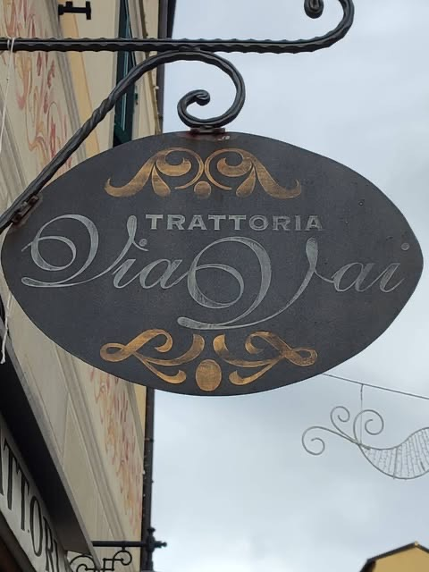
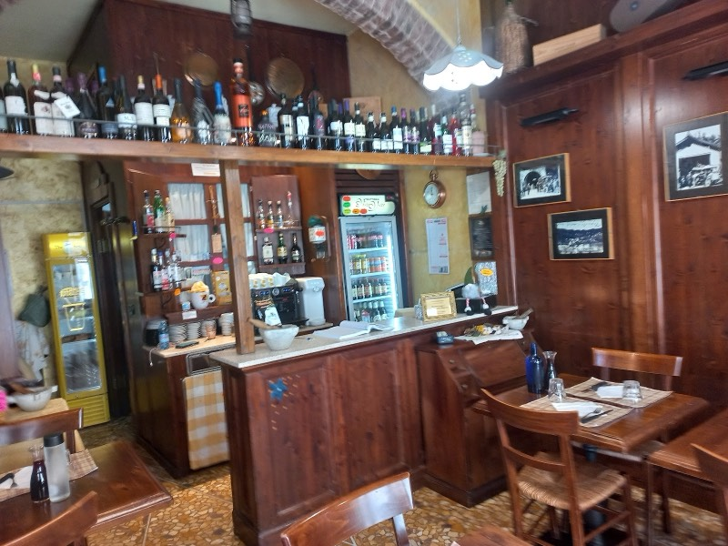
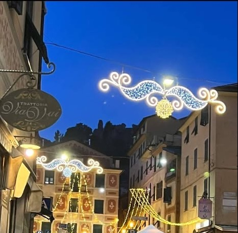
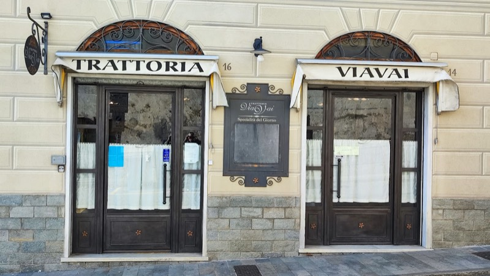

Benvenuti a tavola!
Trattoria tipica ligure a Torriglia
Da oltre 25 anni cucina casalinga dell'entroterra: funghi della nostra zona, ravioli, pesto d'aglio. Pranzo e cena a prezzo fisso o alla carta, 20–30 € a persona.
- 4,2 · 431 recensioni Google
- Pranzo 12–14 · Cena 19–21
Via Provvidenza 14, Torriglia (GE) · Chiuso il mercoledì



La nostra storia
Mangiare a Torriglia come a casa
“Un grazie sincero a tutti voi che, anno dopo anno, avete scelto la nostra tavola e siete diventati parte della nostra storia.”
Siamo una trattoria dell'Alta Val Trebbia: piatti del territorio, tra Liguria e Piacenza, che cambiano con le stagioni. La nostra peculiarità? Il pesto d'aglio.
STORIA: chi c'è in cucina e in sala, com'è nata la trattoria — DA INSERIRE
- Prezzo fisso o alla carta, a pranzo e a cena
- 20–30 € a persona, secondo i clienti su Google
- Porzioni generose, lo scrivono nelle recensioni
- Vini e Trebbia beer della valle
- Accessibile in sedia a rotelle
- Chiuso il mercoledì
Dicono di noi
Cosa dice chi si è seduto alla nostra tavola
“Siamo stati a pranzo a ferragosto […] Tutto ottimo, dall'antipasto misto che comprendeva frittatine, melanzane grigliate con salsa verde, formaggi, salumi eccellenti, insalata russa casalinga […] Tagliolini freschi al sugo di funghi veramente appetitosi. Funghi fritti da farci il bis e per finire una torta di mele calda deliziosa. Torneremo!”
“Piacevolissima serata in questo caratteristico ristorante chiacchierando col titolare, molto simpatico, gentile e a modo, che mi ha raccontato del cibo locale e della caratteristica cittadina […] La tagliata era squisita. Lo consiglio vivamente.”
“Una bella sorpresa. Buon cibo, ragazze professionali e simpatiche. Pulito e ordinato. Il cibo è veramente ottimo. Buona qualità prezzo.”
Quando la trattoria si accende
Musica dal vivo, karaoke e buona cucina
Alcune sere la sala si riempie di musica: concerti dal vivo, karaoke e DJ set, con apericena o menu alla carta. Le date le annunciamo su Instagram e Facebook.
Ti teniamo il posto
Prenota un tavolo alla Trattoria ViaVai
Scegli giorno, orario e quante persone siete: si apre WhatsApp con il messaggio già scritto. Il tavolo è confermato quando ti rispondiamo.
Oppure scrivici per…

Dove siamo
Ristorante a Torriglia, in Via Provvidenza 14
Via N.S. della Provvidenza 14–16, 16029 Torriglia (GE)010 945 1005 · 351 393 6541
- Cerca le due porte verdi e l'insegna ovale “Trattoria ViaVai”.
- Ingresso, tavoli e bagno accessibili in sedia a rotelle.
Orari
| Lunedì | 12–14 · 19–21 |
|---|---|
| Martedì | 12–14 · 19–21 |
| Mercoledì | Chiuso |
| Giovedì | 12–14 · 19–21 |
| Venerdì | 12–14 · 19–21 |
| Sabato | 12–14 · 19–21 |
| Domenica | 12–14 · 19–21 |
Domande frequenti
Prima di venire a mangiare a Torriglia
Che giorni è aperta la Trattoria ViaVai?
Tutti i giorni tranne il mercoledì, a pranzo dalle 12 alle 14 e a cena dalle 19 alle 21.
Quanto si spende in trattoria a Torriglia?
Pranzo e cena sono a prezzo fisso o alla carta. Su Google i clienti indicano una spesa di 20–30 € a persona. Prezzo del menu fisso: DA INSERIRE
Che cucina proponete?
Piatti del territorio dell'entroterra ligure e piacentino, che cambiano con le stagioni: antipasto della casa, ravioli al pesto d'aglio o al ragù, tagliolini ai funghi, funghi fritti, secondi di carne e dolci. Vini e Trebbia beer della Val Trebbia.
Come si prenota un tavolo?
Dal modulo qui sopra (si apre WhatsApp con il messaggio pronto) oppure chiamando lo 010 945 1005 o il 351 393 6541.
Organizzate serate con musica?
Sì, alcune sere: musica dal vivo, karaoke e DJ set, con apericena o menu alla carta. Le date sono su Instagram e Facebook.
Il ristorante è accessibile in sedia a rotelle?
Sì: ingresso, tavoli e bagno sono accessibili in sedia a rotelle.